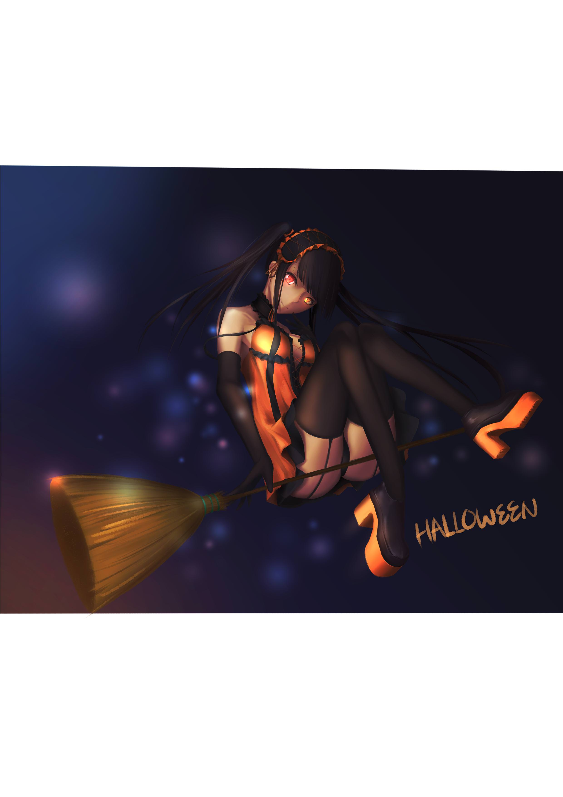
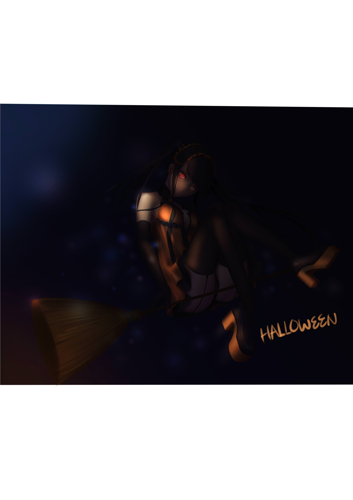

<div id="article_content" class="text-paragraph article_container">好久沒畫三三，果然畫真命特別來勁<div>萬聖節還真的不知道要畫什麼，所以這服裝就直接參考原本的設計惹</div><div><br></div><div></div><div><br></div><div>每次開圖都開成A4，結果畫完才發現是橫向</div><div>萬聖節其實沒什麼感覺</div><div>但是看到各路大手的圖就手癢癢</div><div><br></div><div><br></div><div><br></div><div><div>喜歡的話還請訂閱小屋!或給個GP</div><div><br></div><div>想追蹤比較多日常還請走:<a href="https://www.facebook.com/Bushyeyebrowscat/" target="_blank"><font color="#FF0000"><font color="#FF0000">專頁</font></font></a></div><div><a href="https://www.facebook.com/Bushyeyebrowscat/" target="_blank"><font color="#FF0000"><font color="#FF0000">帽捲maochinn-繪圖坊</font></font></a></div><div><br></div><div><a href="https://www.pixiv.net/member.php?id=6856401" target="_blank"><font color="#FF0000"><font color="#FF0000">P站</font></font></a></div><div><font color="#FF0000"><a href="https://www.pixiv.net/member_illust.php?mode=medium&illust_id=65703161" target="_blank">給讚</a></font></div></div><div><br></div><div>還有更新頻率應該還會這麼慢(哭暈</div><div>大量期末project發生中</div><div>希望能夠至少一個月一張圖</div><div><br></div><div>再附一張 感覺比較不一樣的</div><div></div><script>
$('article.c-text img').load(function () {
// 表格內圖片大於表格寬時，設為 100%
if ($(this).parents('table').length != 0) {
if ($(this).width() >= $(this).parents('td').width()) {
$(this).width('100%');
} else {
$(this).width($(this).width() + 'px');
}
}
});
</script></div>